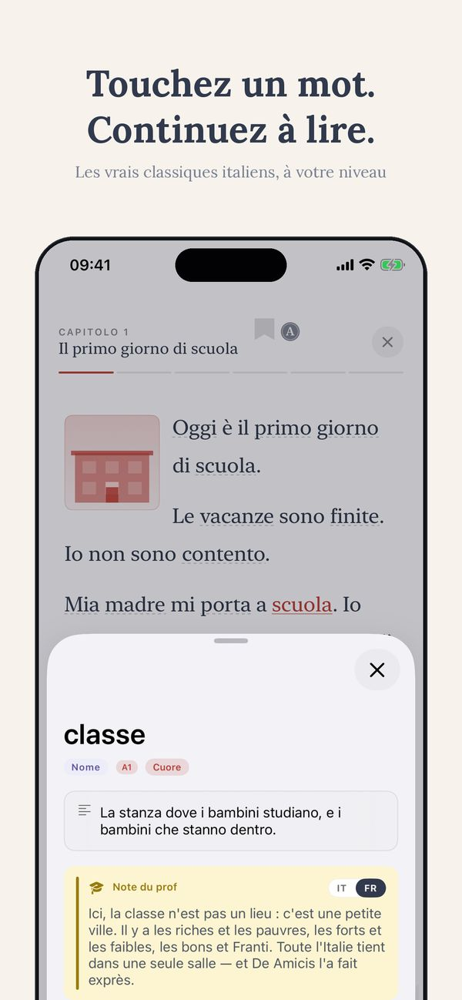
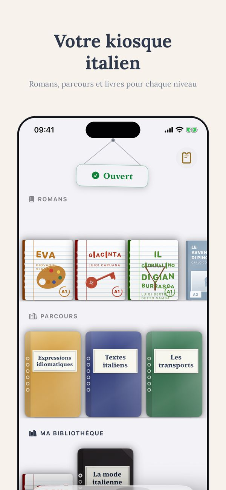

Scuola Leonardo da Vinci Firenze
Scuola Leonardo da Vinci Firenze est une école d'italien pour étrangers à Firenze (Toscana) : cours intensifs d'environ 20 heures par semaine et formules plus légères, avec un début en général chaque lundi. L'école aide aussi à trouver un logement. Ci-dessous : les informations essentielles, un mini-guide de Firenze pour organiser votre séjour et un formulaire pour écrire directement à l'école.
Le cours
Jours fériés 2026
| 1er janvier | Jour de l'an |
| 6 janvier | Épiphanie |
| 5–6 avril | Pâques et lundi de Pâques |
| 25 avril | Fête de la Libération |
| 1er mai | Fête du Travail |
| 2 juin | Fête de la République |
| 15 août | Ferragosto (Assomption) |
| 1er novembre | Toussaint |
| 8 décembre | Immaculée Conception |
| 25–26 décembre | Noël et Saint-Étienne |
À ne pas manquer à Firenze
- Galleria degli Uffizi
- Cupola del Brunelleschi e Duomo
- Oltrarno e Ponte Vecchio
Organiser votre cours d'italien à Firenze : arrivée par Firenze (FLR) ou Pisa (PSA), réservation 2–3 semaines à l'avance (en haute saison, juin–septembre, les classes se remplissent vite) et, si possible, faites coïncider votre semaine d'étude avec l'un des événements ci-dessus — parler italien pendant une fête locale vaut une semaine de cours.
La météo maintenant
Les sigles, en bref
| ASILS | Association italienne des écoles d'italien langue seconde ; qualité contrôlée par un certificateur indépendant. |
| EDUITALIA | Association d'écoles et d'universités accréditées qui promeut les études en Italie. |
| AIL | Accademia Italiana di Lingua : réseau d'écoles avec ses propres examens « Firenze ». |
| IALC | Réseau international d'écoles de langues indépendantes et inspectées. |
| Bildungsurlaub | Reconnaissance allemande : le cours ouvre droit au congé de formation rémunéré. |
| CILS | Certification officielle de l'Université pour étrangers de Sienne. |
| CELI | Certification officielle de l'Université pour étrangers de Pérouse. |
| PLIDA | Certification officielle de la Società Dante Alighieri. |
| CSN | Organisme suédois de financement des études : le cours ouvre droit aux aides CSN. |
| LICET | Association d'écoles d'italien avec des standards de qualité partagés et des inspections mutuelles. |
| DITALS | Centre agréé pour l'examen DITALS (certification pour enseignants d'italien) de l'Université pour étrangers de Sienne. |
Écrire à l'école
Votre message part via thuisitaliaans ; l'école répond directement à votre e-mail.
Autres écoles à Firenze
ABC FirenzeCentro FiorenzaIstituto MichelangeloEuropass Italian Language SchoolCentro MachiavelliLinguavivaÉvénements de l'année
| Scoppio del Carro ✓ cours à ces dates | Pâques |
| Maggio Musicale Fiorentino ✓ cours à ces dates | avril–juin |
| Pitti Uomo ✓ cours à ces dates | janvier et juin |
| Firenze Rocks ✓ cours à ces dates | juin |
| Festa della Rificolona ✓ cours à ces dates | 7 septembre |
Questions fréquentes
Quand commencent les cours d'italien chez Scuola Leonardo da Vinci Firenze ?
Combien d'heures de cours par semaine ?
Combien coûte un cours d'italien à Firenze ?
L'école aide-t-elle à trouver un logement ?
Puis-je préparer ou passer un examen officiel (CILS, CELI, PLIDA) ?
Comment arriver à Firenze ?
Pas encore en voyage ? Commencez chez vous.
Avec l'appli ti, vous apprenez l'italien en lisant des histoires graduées, avec 14 langues d'aide, des exercices et des traductions. La meilleure façon d'arriver en Italie déjà prêt.
Commencer à la maison ↗
